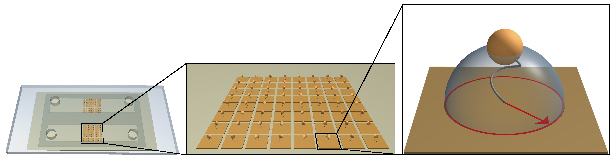
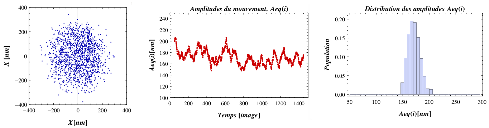
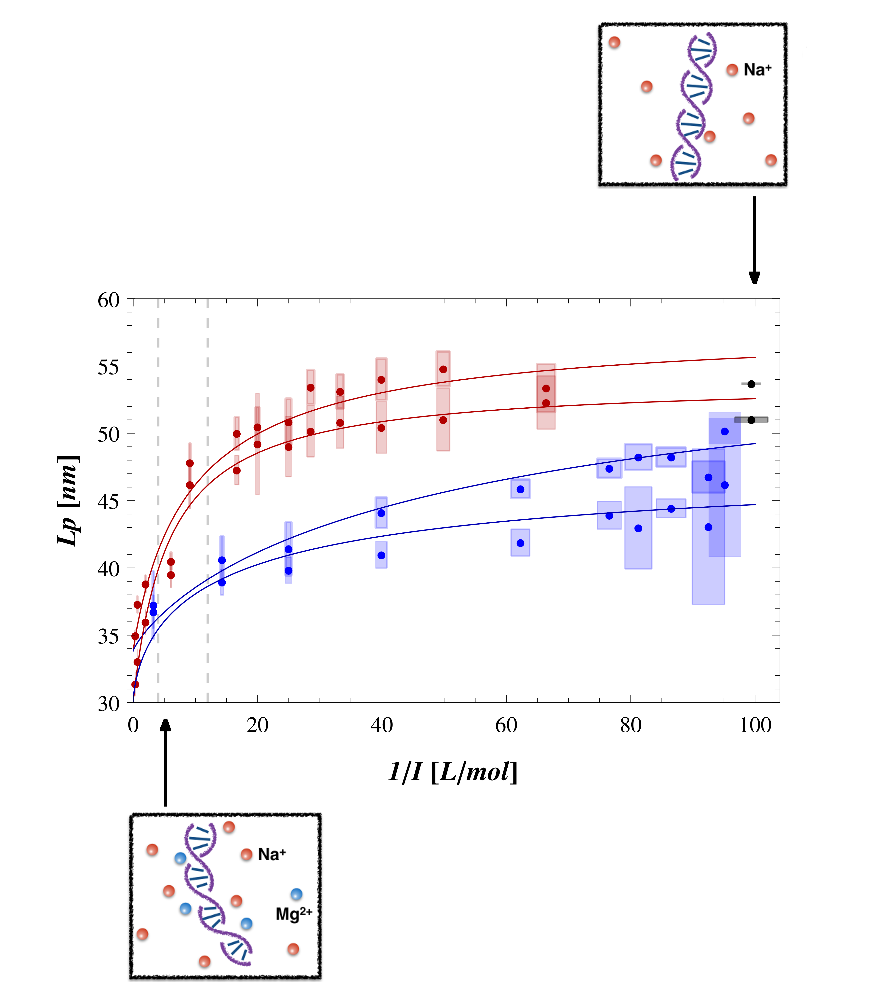

Research
Understanding the impact of environmental effects on the mechanical and physical properties of DNA stay a decisive challenging to well understanding the live of cells. As everybody knows, DNA is an essential component of the cellular machinery. It adopted a lot of conformation from packaging chromosome to the commonly-know double helix and it play a crucial role in lot biological processes such as transcription or replication.
Indeed, it was experimentally found that DNA is a polymer which can stiffen, abruptly bend or be partially denatured in function of its sequence. This local events radically alterne the physicals properties of the DNA molecular in terme of flexibility and elasticity.
So, is crucial to understanding the physics of this molecule. In this framework, we develop tools to quantify, both experimentally and theoretically the impact of physical and chemical changes on the mechanics of a DNA molecule.
Experimental and numerical simulation
My project constists in both using the Thethered Particle Motion (or TPM) methode and modeling the DNA behaviour by numerical simulations.
Experiment approach: TPM is a recent experimental single molecule technique which consists in grafting one end of the DNA molecular(length L_{DNA}) on a substrat and a nanometric particule (with raduis R_{par}) at the other end. The brownianne motion of the tethered nanoparticle is followed. The amplitude of the motion R_{Exp||} of this complex DNA/particle that directly depends on the apparent length of the DNA molecule, so of its conformational changes of DNA molecules.
The TPM technique is well adapted to address questions concerning conformational changes of the DNA molecule such as curvatures, or denaturation buble. Since conformational degrees of freedom are not hampered by any external constraints with TPM methode. Moreover, the IPBS group, which has a recognized expertise in TPM techniques, has developed a biochip that enables the high parallelization of TPM and the analysis enought molecules simultaneously[1]. Thanks to the ensuing high-throughput data acquisition, we obtain a large accumulation of individual statistics that permits us to get results with a good accuracy. In that way, the 2D projection of the bead displacement relative to the anchoring point of the DNA molecule gives access to its root-mean-squared end-to-end distance projected on the grafting surface, noted Rexp||raw.
[1] Plénat, T., Tardin, C., Rousseau, P., Salomé, L., 2012. High-throughput single-molecule analysis of DNA-protein interactions by tethered particle motion. Nucleic Acids Research. 40 (12) : e89.
Numerical simulation approach: I performed Kinetic Monte Carlo simulations on the particle-DNA complex to predict the particle to anchor 2D-distance. The current simulation model is based on statistical model of polymer described at the mesoscopic scale[2].
To simulate the TPM geometry I model the DNA-particle complex as a chain of N(:25 or 50) connected small spheres of radius a and a larger final particle of radius R (R_{par}). Numerical displacement of the labeled particle is obtained by performing a Kinetic Monte Carlo Simulation with the followings constraints : hard-wall condition, freely rotative joint and hard sphere.
The 2D-vector of the particle position is measured throughout simulations and utilized to estimate the amplitude of motion and average being taken along the trajectory. We obtain R_{Simu||} which would be compare at the TPM experiment measurement.
[2]Je suis pas sûre quel de deux references (dans texte que tu m'a donné) tu veux metrre ici.
Théortical aspect: Obtaining most degree of pertinant physical parameter of the DNA requires few step of analysis procedure. The calculation of the root-mean-square end-to-end distance of the DNA molecule R_{DNA} from the R_{Exp||} or R_{Simu||} requires an appropriate theoretical model and correcting for the effects of the particle.With the classical Worm-Like chain model [5] , the amplitude of motion of the DNA-particle complex, take into account the persistence length of the DNA, is derived from the 〈R 2 DNA 〉 calculated for an isolated DNA molecule:
In this second step we considering that the particle and the DNA molecule are statistically independent and in ignoring the effect of the substrate. We can simply infer R_{DNA} with:
[2] M. Manghi, C. Tardin, J. Baglio, P. Rousseau, L. Salomé, N. Destainville, 2010. Probing DNA conformational changes with high temporal resolution by tethered particle motion, Phys. Biol. 7, 046003.
Results
Global effect: Variation of Ionic strenght: A first study was conducted on the effect of the ionic strength induced by surrounding ions in solution on the DNA persistence length (L p ) which characterizes the DNA polymer rigidity. The extracted L p values of HT-TPM measurement decrease from 55 to 30 nm when the ionic strength increases. A stronger decrease was observed in presence of divalent ions Mg 2 + than with monovalent ions Na + .
This quantification of L p dependence, on a large and strongly prospected range of ionic strengthes, tends to validate the theoretical approach proposed in 2006 by Manning in presence of monovalent ions Na + . 
[3] Brunet, A., Tardin, C., Salomé, L., Rousseau, P., Destainville, N., Manghi, M., Dependence of DNA persistence length on ionic strength of solutions with monovalent and divalent salts : a joint theory-experiment study, Macromolecules, 2015, 48 (11), pp 3641–3652, DOI : 10.1021/acs.macromol.5b00735.
Local defect: Intrisic bent: A second project allows us to develop a method of evaluation and quantification of local DNA bending angles, induced either by specific intrinsic sequence, or by the binding of proteins on DNA. Constructs made of 575 base-pair DNAs with in-phase assemblies of one to seven sequences CAAAAAACGG was used. A theoretical description of the polymer chain, named "kinked Worm-Like Chain" was proposed which leads to a simple formulation of the end-to-end distance of DNA molecules allowing to extract local bend angles from HT-TPM measurement. As a result, we find that the sequence CAAAAAACGG induces a bend angle of 19 ◦ ± 4 ◦ , in agreement with other value from the literature.[4] Brunet, A., Chevalier, S., Destainville, N., Manghi, M., Rousseau, P., Salhi, M., Salomé, L., Tardin, C., Probing a label-free local bend in DNA by single molecule tethered particle motion, Nucleic acids research, 2015, 42 (11), pe 72(7) DOI : 10.1093/nar/gkv201
Local defect: formation of dénaturation bubble: A third study concerning the influence of temperature-induced partial denaturation on the global apparent rigidity parameters of the polymer was conducted. Preliminary results are proposed.